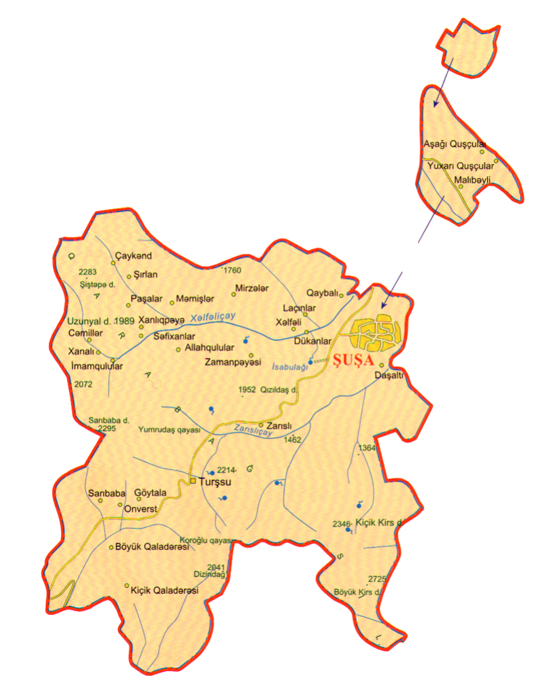

Şuşa — Azərbaycan Respublikasının Dağlıq Qarabağ bölgəsində yerləşən şəhər. Azərbaycanın mədəniyyət paytaxtı. Şuşa rayonunun inzibati mərkəzi. Şəhərin təməli 1752-ci ildə Qarabağ xanı Pənahəli xan tərəfindən qoyulub və ilk çağlarda şəhəri Şuşa adı ilə yanaşı xanın şərəfinə Pənahabad adlandırırdılar. Şuşada 17 məhəllə vardı: Seyidli, Culfalar, Quyuluq, Çuxur məhəllə, Dörd çinar, Dördlər qurdu, Hacı Yusifli, Çöl Qala, Qurdlar, Saatlı, Köçərli, Mamayı, Xoca Mərcanlı, Dəmirçilər, Hamamqabağı, Merdinli və Təzə məhəllə. Hər məhəllədə hamam, məscid və bulaq vardı. XVIII əsrdə Şuşa şəhəri Azərbaycanın ən mühüm şəhərlərindən birinə çevrilmişdi. Onun dövrəsində böyük və güclü sədd çəkilib, çoxsaylı sənətkar məhəllələri yaranıb. Şuşalı tacirlər İran şəhərləri və Moskva ilə ticarət əlaqələri saxlayır burada Pənahabadi adlanan gümüş sikkə zərb edilirdi. XIX əsrin sonu və XX əsrin əvvəllərində Şuşa Qafqazın musiqi mərkəzinə çevrilmişdi. Şuşanı "Kiçik Paris", "Qafqazın sənət məbədi", "Azərbaycan musiqisinin beşiyi" və "Zaqafqaziyanın konservatoriyası" adlandırırdılar. XX əsrin əvvəllərinədək Azərbaycanda, o cümlədən Şuşada musiqi sənəti, ilk növbədə xanəndə və sazəndələr ustad-şəyird zəminində inkişaf edirdisə, artıq XX əsrdən başlayaraq peşəkar musiqi təhsili daha geniş sahələri əhatə edərək, sistemləşdirilməyə və kütləviləşməyə doğru istiqamət götürmüşdü. O dövrdə Azərbaycanda bəstəkar Üzeyir Hacıbəyovun böyük əməyi sayəsində peşəkar musiqi təhsilinin bünövrəsi qoyulur. 1905, 1920 və 1992-ci illərdə Şuşa üç dəfə tamamilə yandırılmışdır. Birinci dəfə onu hər iki icma, ikinci dəfə azərbaycanlılar, üçüncü dəfə isə ermənilər yandırmışdı. Etnik qərəzliyə baxmayaraq, hər iki icmanın nümayəndələri arasında qarışıq nikahlar yer almışdı. Ticarət və Rusiyanın hökmranlığı hər iki icmanı bir-biri ilə bağlayan tellər idi. Bu tellərdən birincisi təbii, ikincisi isə süni idi. Şuşa şəhəri 1992-ci il may ayının 8-də erməni birləşmələri tərəfindən işğal edilmişdir. Şuşanın işğalı nəticəsində şəhərdə 195 nəfər Azərbaycan vətəndaşı xüsusi amansızlıqla qətlə yetirilmiş, 165 nəfər yaralanmış, onlardan 150 nəfəri əlil olmuş, 552 körpə valideynlərini itirmiş, 20 mindən artıq əhali isə doğma yuvasını tərk edərək məcburi köçkün vəziyyətinə düşmüşdür. Əsir və girov götürülmüş 58 azərbaycanlının taleyi barədə bu günə qədər məlumat yoxdur. Şuşanın işğalı nəticəsində azərbaycanlıların tarixi izlərini silmək məqsədilə vandallar 600 yaxın tarixi memarlıq abidəsini, o cümlədən Pənahəli xanın sarayını, Yuxarı Gövhər ağa məscidini, Aşağı Gövhər ağa məscidi, Xurşidbanu Natəvanın evini, Molla Pənah Vaqifin məqbərəsini yerlə-yeksan etmiş, 7 məktəbəqədər uşaq müəssisəsini, 22 ümumtəhsil məktəbini, mədəni-maarif, kənd təsərrüfatı texnikumlarını, orta ixtisas musiqi məktəbini, 8 mədəniyyət evinin, 22 klubu, 31 kitabxananı, 2 kinoteatrı, 8 muzeyi, o cümlədən Şuşa Tarix Muzeyi, Azərbaycan Xalça Muzeyinin filialı və xalq tətbiqi sənəti muzeyi, Qarabağ dövlət tarix muzeyi, turist bazasını, Qafqazda yeganə Şərq musiqi alətləri fabrikini dağıtmış, buradakı nadir sənət incilərini talamış və məhv etmişlər. Şəhərin tarixi muzeyinin 5 minədək əşyası, Azərbaycan Xalçası və Xalq Tətbiqi Sənəti Dövlət muzeyi Şuşa filialı, Dövlət Qarabağ Tarixi muzeyinin 1000-dək əşyası, peşəkar Azərbaycan musiqisinin banisi, bəstəkar Üzeyir Hacıbəyovun (300-dən çox əşya), müğənni Bülbülün (400-dək əşya), musiqiçi və rəssam Mir Möhsün Nəvvabın (100-dən çox əşya) xatirə muzeylərinin fondları qarət edilib. 8 noyabr 2020-ci ildə Azərbaycan Silahlı Qüvvələri tərəfindən işğaldan azad edilmişdir.
